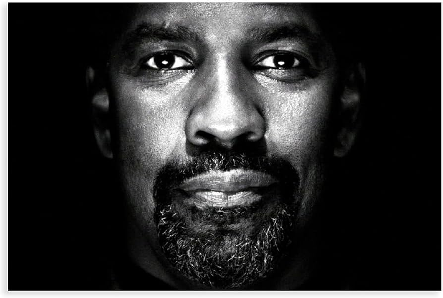

Home
Denzel Washington ist ein herausragender amerikanischer Schauspieler, Regisseur und Produzent, der für seine eindrucksvollen Darstellungen in zahlreichen Filmklassikern bekannt ist.
Mit seiner charismatischen Präsenz und seinem tiefen Verständnis für die Charaktere, die er spielt, hat er sich einen festen Platz in der Filmindustrie erobert.


Weitere Informationen finden Sie auf seiner Wikipedia-Seite.